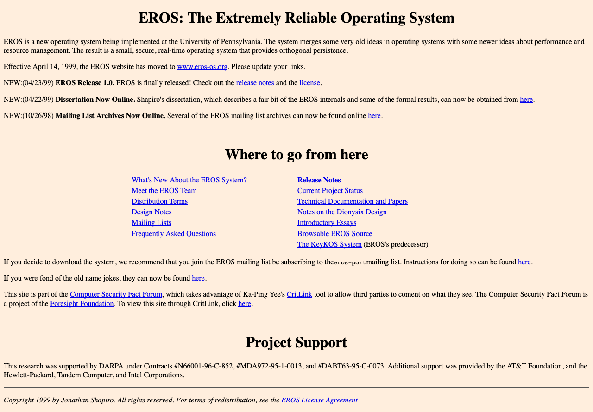

Landmarks
Matthew Tylee Atkinson
@matatk on Twitter
Use the arrow keys to move between slides, F for full-screen and S for story mode, which gives background info on the content.
This is a talk about landmark regions, a technique that can make your web pages much easier to navigate. You may've heard of landmarks before, but I wanted to step back and tell the story of how they came about, as this helps us to understand what they're for and how much they rock.
When navigating about the web, we often have two important questions in mind…
What's on the page?
How can I get there?
Several different ways to address this have been created over the years, probably the most fundamental and well-recognised being…
Headings
In the beginning, websites had simple headings, lists and links to give them structure.

(Incidentally, if you're interested in Operating System design, EROS has several novel features, including the lack of a filesystem (it uses a persistent system image, partly for improved security) and "capability-based" security, and part of that security model has been formally verified.)
In simple sites, people using a keyboard or screen-reader could use a few keys to navigate.
↑ key to srcoll up, or announce the previous element.
↓ key to scroll down, or announce the next element.
Tab key to move between interactive elements (links, buttons, form controls).
Screen-readers also provide shortcuts such as H to move to the next heading.
Screen-reader users can bring up a dialog listing the headings found on a page, and navigate between them this way, too.

Sites evolved
The web is more sophisticated now and has evolved in different ways…
One way in which sites have evolved is in terms of visual design.
The Paciello Group home page has simple content, but a more sophisticated visual design that immediately communicates the structure of the page; it's clear that there's a main central section, which draws the visitor's attention, and some ancilliary information down at the bottom.

Pages may have a large volume of information on them…

The article is long, detailed and has many headings.
There are a lot of headings here, but they match the structure of the article, so are helpful for fine-grained navigation about the article.

If we zoom into the top of the page, though, the visual design indicates that there are some actions that can be accomplished that are not just about reading the article…

Actions that can be performed include…
- Searching Wikipedia.
- Viewing the history or metadata around the article.
- Navigating about Wikipedia as a whole.

We also use the web for different things, including tasks such as online shopping.

Headings can help us navigate here, but what if we wanted to move easily between the product search results and our shopping basket, for example?
We also have full-featured web-apps, such as communications suites whose interfaces may include several different panes for folder navigation, contacts, message lists and content.

The next major development for navigation helped alleviate several of these problems…
Skip links
Skip links are web-author-provided links that are found by convention at the top of the page. Their purpose is to take you directly to the main content. Whilst you might want to explore any navigational content towards the start of the page on your first few visits, if you are familiar with the site, it can save a great deal of time to skip the navigation when it's not needed.
Upon the first press of the Tab key, the skip link becomes visible.

Following the link moves the focus to the start of the article, missing out all the navigational links.

Skip links are awesome
Easily discoverable—by convention they're always at the top of the page.
Avoid repeated content
Save your visitors' time
But…
Skip links do have some limitations; they're…
Only at the top (where the author put them)—you can't access them from anywhere.
Only a partial overview—they only let you skip over/to what the page author prescribed.
Not quite so useful in app-like settings
There is a solution to these problems, though, and that is of course…
Landmark regions
Landmarks are…
Signposts to broad areas of the page
Non-visual complement to visual design—they don't change the appearance of a page; they let you impart the same structural information that the visual design does to people who may not be able to perceive it.
Random access—you can move between landmarks wherever you are on the page.
Part of the W3C's Accessible Rich Internet Application (ARIA) standards—and support for them across browsers and assistive technologies is mature.
We can use landmarks to call out the areas of a page, for example The Paciello Group home page we considered before.

The main areas are:
- Navigation.
- The "main bit".
- An area that's probably contact information and other stuff.

As it happens, the landmark structure on TPG's home page includes a "banner" area that contains the logo as well as the "navigation" region with links. Also of note is that landmarks, like headings, can have a tree-like structure, as they can be nested.
As a page author, you may be asking…
How do I provide landmarks?
The following examples show how to provide a landmark region for search functionatlity, the main content, footer and then other content too.
Search box
This is how you may be marking up a search box now…
Search box with landmark
A helpful "search" landmark region can be added simply, va the role attribute on the containing div.
Main content
Steve Faulkner did some research and found that there are some common ways people code up the container of the page's main content. They may use id="content"…
Main content: popular id value
However, using an id of "main" is even more popular.
Main content with landmark
To have this container recognised as the "main" landmark, simply add role="main".

But, as with immortals from Highlander, there can only be one main element per page, so the code could be simplified…
Main content identified by landmark role
You could just use the role attribute instead of the id value to identify the main content, and key your CSS off this instead.
However, HTML 5 allows us to use even simpler and clearer markup…

Main content: HTML 5 version
HTML 5 introduced the main element, which brings with it an automatic "main" landmark.
Main content: Summary
is the same, semantically, as
Footer
A similar story applies to the footer element.
HTML5 Automagicalness
HTML 5 provides a number of elements that may be consdiered as landmarks automatically.
| Element | Landmark region role |
|---|
<header> | banner1 |
<nav> | navigation |
<main> | main |
<section> | region2 |
<form> | form2 |
<aside> | complementary |
<footer> | contentinfo1 |
- if page-global
- if labelled
Labelling landmarks
The above code isn't a landmark, but this is:
Golden
Rules
Golden Rule 1
Landmarks: should be used to provide an overview of the content.
Headings: provide the fine-grained navigation

The regions are…
- Search
- The article
- Navigation
The complexity of the headings contrasts with the relatively simpler landmarks. This is good, because landmarks are there to give an overview of what's on the page, and headings are for the fine-grained navigation around the content, and must reflect its strucutre.
Golden Rule 2
Use relatively few landmarks…
…but cover all of the content on the page.
This ensures that all content has a home, but the overview is as concise as can be.
Golden Rule 3
If you've got more than one of the same type of landmark on a page, use labels to differentiate them.
The following code shows two navigation landmarks on a page. Without delving into their content, it's not clear what the purpose of each of them is, though it may be obvious from the visual design of the page.
Labels can be provided to make the different purposes of the navigation regions clear…
But, the following technique for labelling the regions is better, becuase visually-apparent headings are used to provide the labels, which are apparent and can be helpful to more users, particularly anyone who finds reading difficult or has a cognitive impairment.…
Golden Rule 4
There's no need to include the type of landmark in its label.
Given the following code…
Screen-readers may say
"Site, navigation"
However, if the type of the region is included in the label…
Screen-readers may say
"Site Navigation, navigation"
…which is not what you want :-).
But I said landmarks could be helpful for everyone, so what about keyboard users?
…and what about mouse users?

Landmarks extension demo
(At this point, the Landmarks browser extension would be demonstrated. The demo shows how to use it to navigate pages, and also, for developers, how to use the DevTools part of the extension to check how landmark regions are marked up, and add/edit them with updates reflected by the extension in real-time.)
Thanks to…
- David Todd: original Firefox Landmarks extension author
- Steve Faulkner: inspiration, and the
<main> element
- The Paciello Group: HTML5 support development time
- Mark Withall: test-driven development advice
- Carolyn MacLeod: much constructive feedback
- Dan Nye, Jeff Home: web development advice
- Everyone who filed issues, gave feedback or wrote posts
- The Stack Overflow and Mozilla BugZilla communities
How much do you shrink?
The BBC Sport article referenced earlier mentioned this: the average runner shrinks 1.25cm during a marathon, due to spine compression. We all get shorter throughout the day, too, but the amount varies.
The slideshow is in slides mode. Arrow keys will move between slides. To use story mode, which includes extra background information on the content, and lets you browse using a screen reader's virtual cursor, press S, or use the Tab key to reach the story mode button.
Story mode allows you to read the presentation as a document, rather than a collection of separate slides, and includes extra background information on the content. It turns off keyboard shortcuts used for navigating between slides and is recommended if you're using a screen reader.
Slides mode displays each slide one at a time, as they would be projected for the audience. The extra information present in story mode is not displayed. Keyboard shortcuts are used to move between slides.

{kind=link}